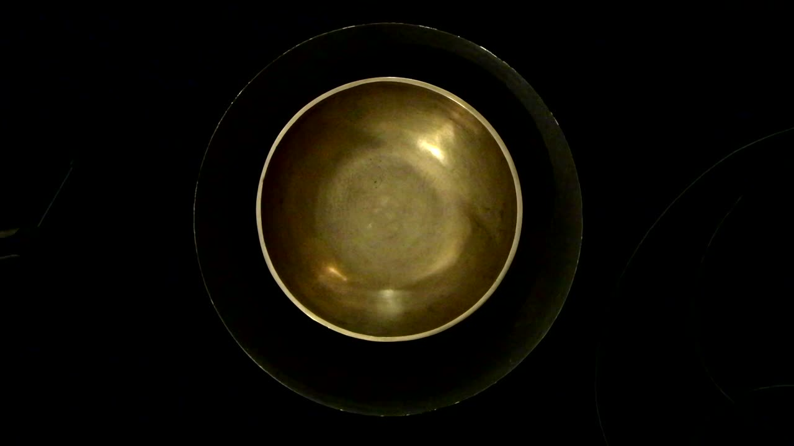
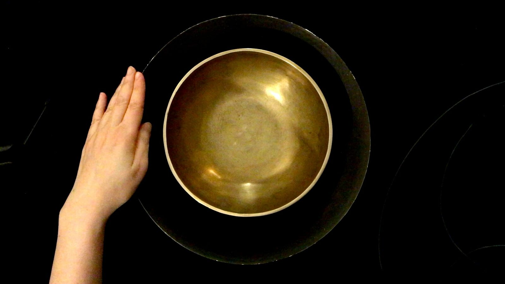
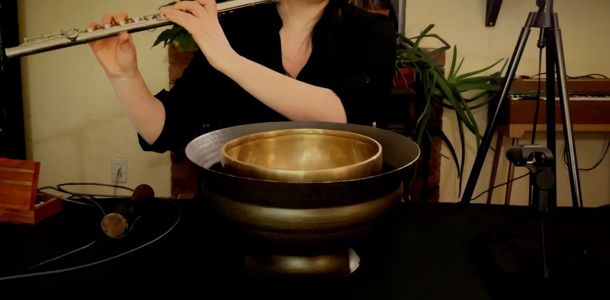
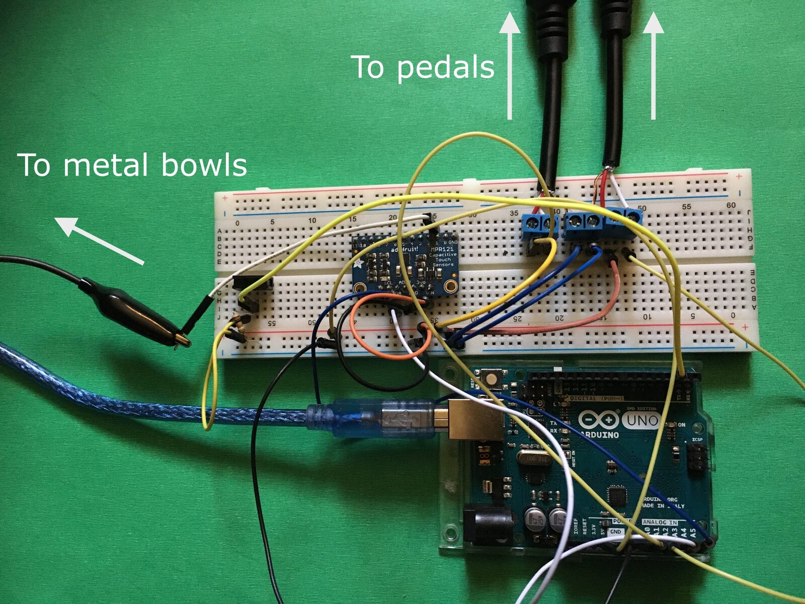
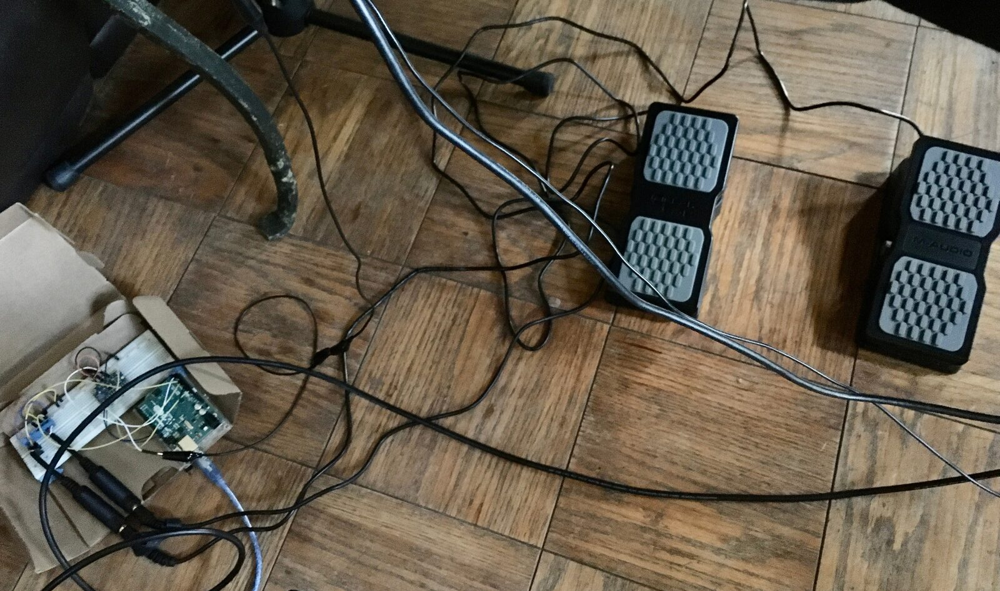
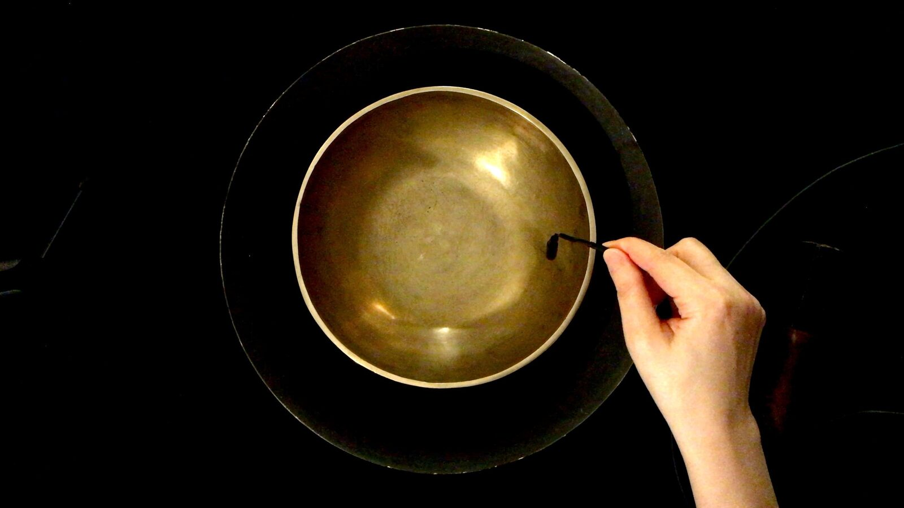
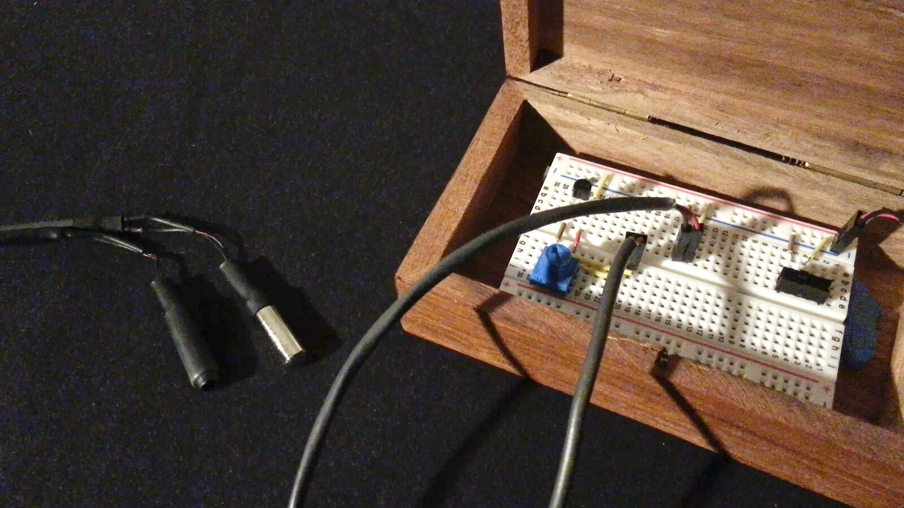

くぼみ --- kubomi
Project Description
I often hear about Asian culture and Asian people. I belong to this category by the global standard, but I am from a specific region and culture. I respect other "Asian people" for their uniqueness, too. But, we often are treated as the same thing in the U.S., and it makes me wonder. What is Asian culture anyways? I don't know what that is.
Years ago, someone was surprised that I had never meditated to singing bowls or sang ohm. In fact, I didn't know much about the practice until coming to the U.S. These metal bowls are commonly associated with Tibetan Buddhism, but I have heard that they were not really from Tibet. They seem more tied to meditation as a popular spiritual practice in the U.S. This phenomenon seems to me is an example of an imaginative exoticism based on mixed information that slowly earned a cultural myth that people accepted as a foreign culture. In くぼみ — kubomi, I use a singing bowl and a mere décor piece of metal bowl, along with sounds of piano and western flute, to challenge the cultural appropriation and exotic expectations.
くぼみ — kubomi is a live interactive performance piece of a custom-designed instrument/controller, kane, that senses the capacitance of the performers’ hands. By stroking the rims of metal bowls, the performer triggers sounds through the capacitive sensing system. With live sounds of hitting the bowls and Western sound sources, this composition encourages us to think about exoticism and quick associations people tend to make about foreign cultures. This composition strives to contemplate all people—how we categorize people based on the look and make quick assumptions, and how we can make ourselves better at understanding each other. “Kubomi” means concave or dent in Japanese.
Type of submission
Option 1: “New NIME” - traditional NIME music sessions aimed at showcasing pieces performed or composed with new interfaces for musical expression.
Program Notes
Years ago, someone was surprised that I had never meditated to singing bowls or sang ohm. In fact, I didn't know much about the practice until coming to the U.S. These metal bowls are commonly associated with Tibetan Buddhism, but I have heard that they were not really from Tibet. They seem more tied to meditation as a popular spiritual practice in the U.S. This phenomenon seems to me is an example of an imaginative exoticism based on mixed information that slowly earned a cultural myth that people accepted as a foreign culture.
くぼみ — kubomi is a live interactive performance piece of a custom-designed instrument/controller, kane, that senses the capacitance of the performers’ hands. By stroking the rims of metal bowls, the performer triggers sounds through the capacitive sensing system. With live sounds of hitting the bowls and Western sound sources, this composition encourages us to think about exoticism and quick associations people tend to make about foreign cultures. This composition strives to contemplate all people—how we categorize people based on the look and make quick assumptions, and how we can make ourselves better at understanding each other. “Kubomi” means concave or dent in Japanese.
Media

▶Video: くぼみーkubomi


Playing the instrument, kane. Stroking the rim of each bowl generates sound through the capacitive sensing system.


A side view of the instrument, kane.


Capacitive sensor, switch, and foot pedals run with an Aruduino microcontroller board.
I newly built the capacitive sensing instrument/system for this NIME submission, which is currently on a breadboard. I plan to consolidate it in a wooden encasing for making the system robust for traveling.


Pedals for amplitude and effect control. The interfacing software is Max 8.


Vibration motors to play with the metal bowls


Vibration motors
Bio
Akiko Hatakeyama is a composer/performer of electroacoustic music and intermedia. She explores the boundaries between written music, improvisation, electronics, real-time computer-based interactivity, and visual media. Storytelling, memories, and nature play an important role in Akiko’s work, and she most often finds beauty in simplicity. Akiko’s research focuses on realizing her ideas of relations between the body and mind into intermedia composition, often in conjunction with building customized instruments/interfaces. It is a form of nonverbal communication with her inner self and with the environment, including the audience. By somatically actuating perceptions with sound, light, and haptic objects, her ideas of relations between the body and mind become embraceable. Her exploration in embodying time – in the form of memories, emotions, and personal experiences – is realized. As a result, the exploration brings therapeutic effects. Sharing this special experience only achievable by creating and performing music is an important part of Akiko’s research and teaching. Akiko obtained her B.A. in music from Mills College, M.A. in Experimental Music/Composition at Wesleyan University, where she studied with Alvin, and Ph.D. at Brown University. She is currently an assistant professor at the University of Oregon.
Ethics Statement
I recorded and created all sounds used in this composition and no samples created by others. Thus, unauthorized use of resources is not part of this work. I respect and strictly follow copyright rules in all my creative and academic practices. The microcontroller system for capacitive sensing uses the Arduino IDE, the open-source software, with minimum parts necessary. When I consolidate the system for traveling, I will use a wooden container to reduce the use of plastic. The system uses minimum parts and is reconfigurable to be environmentally sustainable.
The submitted composition aims to address the social issues about cultural myths and prejudice, especially about people of color. The focus on Western music and theories in academia worldwide is partially responsible for cultural assumptions and appropriations without equal accessibility to various cultures of the world. The composition encourages reconsideration of inclusive curricula that reflect various values and cultures from all people.